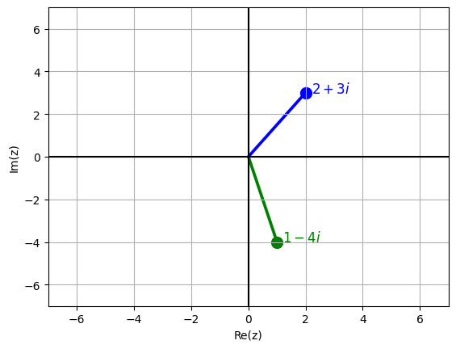

Forma polar#
Los números complejos en su forma polar se expresan como $\( z=r(\cos\theta+i\sin\theta) \)$
donde
\[
r=|z|
\]
y
\[
\theta=\arg(z)
\]
En Python, podemos usar las funciones abs() y np.angle() para obtener la forma polar de un complejo a partir de su forma rectangular
import numpy as np
z1 = 3 + 4j
r = abs(z1)
theta = np.angle(z1)
print(f"z1 = {r:.3f}(cos({theta:.3f} + i sin({theta:.3f}))")
z1 = 5.000(cos(0.927 + i sin(0.927))
Conversión de polar a rectangular#
z1_rec = r*(np.cos(theta) + 1j*np.sin(theta))
print(z1_rec)
(3.0000000000000004+3.9999999999999996j)
Ejercicio#
Simplifique las siguientes expresiones hasta la forma \(a+bi\):
\[
\frac{(1+i)^2+\left(\cos\frac{\pi}{6}+i\sin\frac{\pi}{6}\right)}
{\cos\frac{\pi}{3}+i\sin\frac{\pi}{3}}
\]
\[
\frac{i}{1+i}
+
\frac{i}{1-i}
\]
# Escriba su código aquí
z1 = 1+1j
z2 = complex(1*np.cos(np.pi/6),1*np.sin(np.pi/6))
z3 = complex(1*np.cos(np.pi/3),1*np.sin(np.pi/3))
z4 = (z1**2+z2)/z3
print(z4)
(2.5980762113533156+0.5000000000000003j)
z = 1j/(1 + 1j) + 1j/(1 - 1j)
print(z)
1j
Representación gráfica de complejos#
A continuación se da un ejemplo de la representación gráfica de dos números complejos. Para ello usaremos matplotlib y la función quiver usada en secciones anteriores.
import matplotlib.pyplot as plt
# Definimos dos números complejos
z1 = 2 + 3j
z2 = 1 - 4j
# Tomamos las coordenadas de los puntos
x1 = z1.real
y1 = z1.imag
x2 = z2.real
y2 = z2.imag
plt.figure()
# Graficamos el punto correspondiente a z1
plt.scatter(x1, y1, color='blue', s=100)
# Usamos quiver para repsentar z1 en el plano complejo
plt.quiver(
0, 0, x1, y1,
angles='xy',
scale_units='xy',
scale=1,
color='blue',
headwidth=1,
headlength=0,
headaxislength=1
)
# Etiqueta de z1
plt.text(x1 + 0.2, y1, r'$2+3i$',
fontsize=12, color='blue')
# Graficamos el punto correspondiente a z2
plt.scatter(x2, y2, color='green', s=100)
# Usamos quiver para repsentar z2 en el plano complejo
plt.quiver(
0, 0, x2, y2,
angles='xy',
scale_units='xy',
scale=1,
color='green',
headwidth=1,
headlength=0,
headaxislength=1
)
# Etiqueta de z2
plt.text(x2 + 0.2, y2, r'$1-4i$',
fontsize=12, color='green')
# Ejes
plt.axhline(0, color='black')
plt.axvline(0, color='black')
plt.xlabel('Re(z)')
plt.ylabel('Im(z)')
plt.xlim(-7, 7)
plt.ylim(-7, 7)
plt.grid()
plt.show()

Raíces de un número complejo#
Si
\[
z=r(\cos\theta+i\sin\theta)
\]
entonces las \(n\) raíces de \(z\) están dadas por
\[
z_k=\sqrt[n]{r}\left(\cos\left(\frac{\theta+2k\pi}{n}\right)
+i\sin\left(\frac{\theta+2k\pi}{n}\right)\right)
\qquad
k=0,1,\ldots,n-1.
\]
Ejemplo#
Determine las raíces cúbicas de la unidad
\[
z=1
\]
i.e. todos los números complejos \(w\) tales que
\[
w^3=1
\]
# Escriba su código aquí
z = 1 + 0j
r = np.abs(z)
theta = np.angle(z)
n = 3
for k in range(n):
phi = (theta + 2*np.pi*k)/n
rho = r**(1/n)
z_k = rho*(np.cos(phi) + 1j*np.sin(phi))
print(f"Raíz {k + 1}:")
print("Forma rectangular:", z_k)
print(f"Forma polar: {rho}(Cos({phi:.3f} + i Sin({phi:.3f})))")
Raíz 1:
Forma rectangular: (1+0j)
Forma polar: 1.0(Cos(0.000 + i Sin(0.000)))
Raíz 2:
Forma rectangular: (-0.4999999999999998+0.8660254037844387j)
Forma polar: 1.0(Cos(2.094 + i Sin(2.094)))
Raíz 3:
Forma rectangular: (-0.5000000000000004-0.8660254037844384j)
Forma polar: 1.0(Cos(4.189 + i Sin(4.189)))
Ejercicio#
Determine las raíces cuartas de la unidad
# Escriba su código aquí